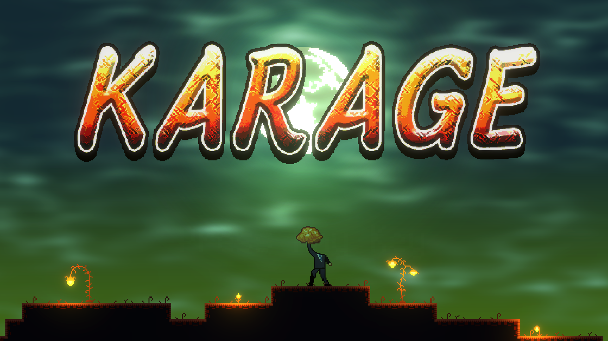
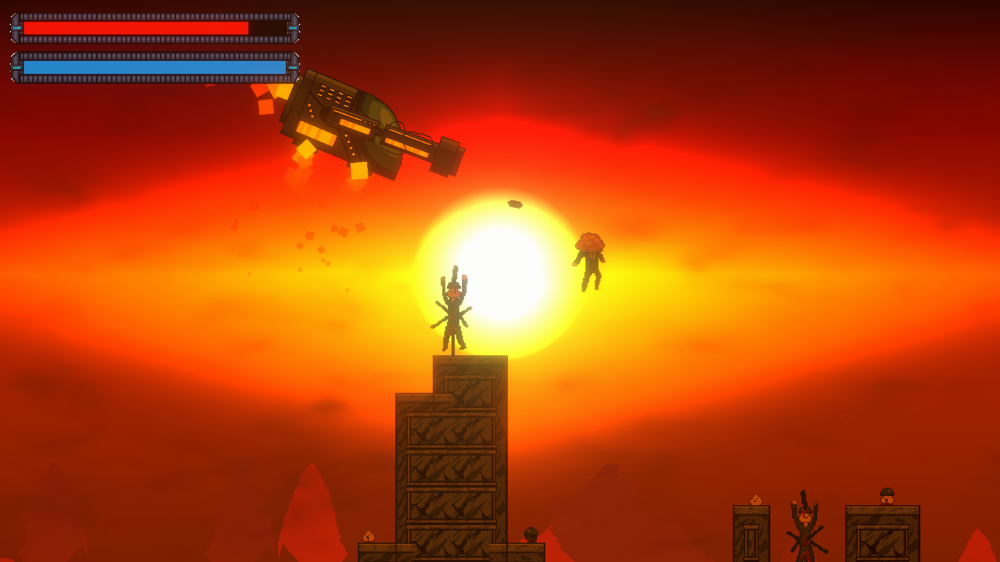
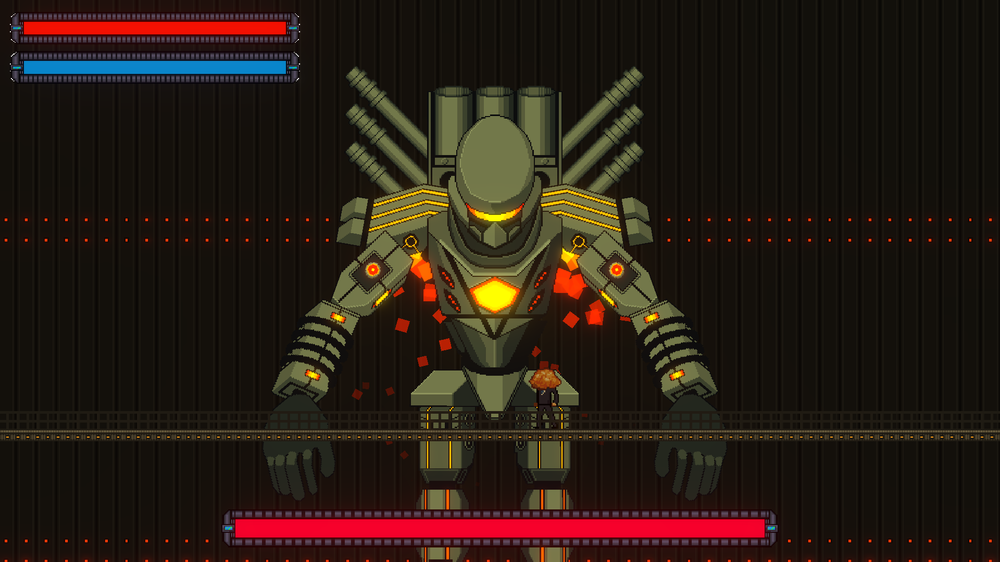
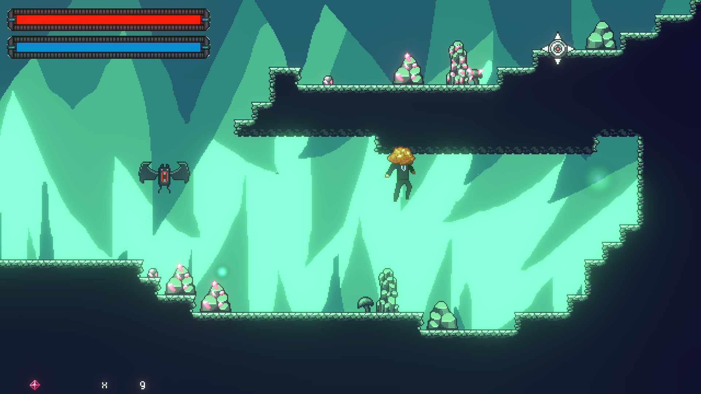
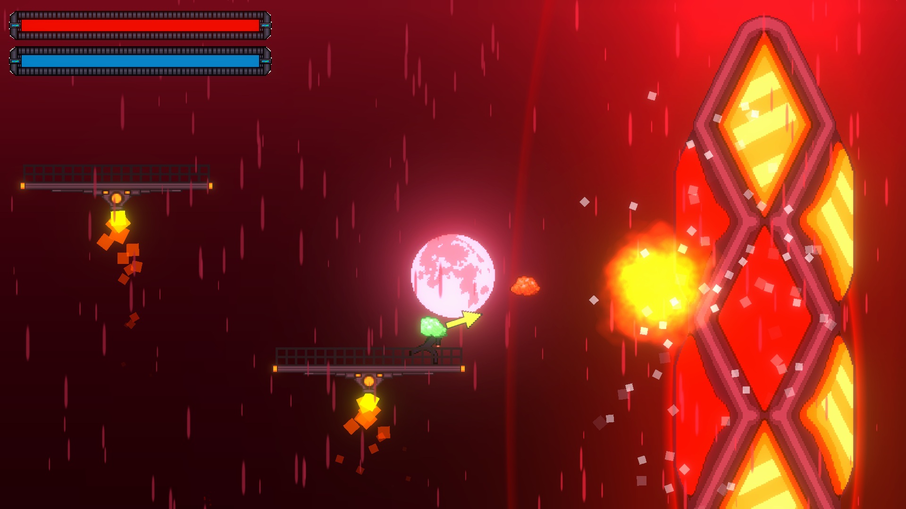

改造人間「KARAGE 」の大冒険
あなたは謎の研究所で頭を
研究所を抜け、森を駆け、戦場を荒らし、世界をこの目に焼き付けよ！！
PV
スクリーンショット
|  |  |  |
|---|---|---|
|  |  |  |
反省点
ゲームとしての反省点
- ゲームバランスがとても悪い
- ストーリーが全くない
- 頭をカラアゲにした理由が全くない
- ゲーム全体が単調で味気ない
プログラムに関する反省点
- SOLID原則をほぼ全て破ってしまった
- public staticを多用し、保守性のないコードを量産した
- １つのスクリプトに処理を詰め込みすぎた
- インターフェイスの使い方を知らなかった
所感
１年生の頃に作ったものということもあり、数多くの問題を抱えたゲームとなってしまいました。
しかし、ゲームクリエイター甲子園で２位を取ったり、地方番組出演や、NHK出演のきっかけにもなりました。
そして、上記に上げた反省点は２年生以降の制作に活かされるなど、自分の中での自信や開発の糧となりました。
その他
ゲームクリエイター甲子園2020で総合大賞２位を受賞！
#GC甲子園 #karage
— Daiki_Shibata_Gamedev (@daiki_shibata1) December 19, 2020
ゲームクリエイター甲子園お疲れさまでした。
本当に素晴らしい作品があふれる中、2位という結果で終わってしまいました。
この悔しさと賞金100万円をバネに、次の甲子園も1位を狙っていこうと思います！ pic.twitter.com/TL90rj20p3
NHK番組「沼にはまって聞いてみた」に出演！
NHK 6月14日(月)午後6:55 放送予定の
— Daiki_Shibata_Gamedev (@daiki_shibata1) June 10, 2021
「沼にハマってきいてみた」に出演することになりました！
１０代がつくった「クセありゲーム」を野田クリスタルさんが本気でプレイしてくれるとのことです！https://t.co/a6wZUyZxxi
「池袋ゲームクリエイター発掘学園」に出演！
ゲームクリエイター甲子園の作品を紹介する番組
— 椎名木るか🎮👾/GCGちゃん【ゲームクリエイターズギルド】 (@Gamecreators_G) July 10, 2021
「池袋ゲームクリエイター発掘学園」放送開始！
第3回は、昨年総合大賞2位に輝いたksg製作所(@daiki_shibata1 )のKARAGE！
豊島区在住の方、もしくはとしまテレビをご契約の方は地上波11chでご視聴いただけます。 pic.twitter.com/WHr6O4dZvt